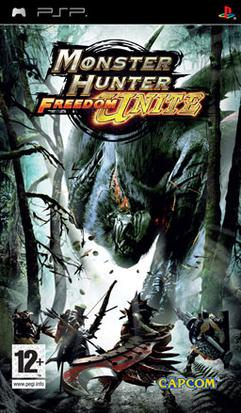

<!DOCTYPE html>
<html>
    <title>Monster Hunter Freedom Unite</title>
    <link rel="stylesheet" href="../style.css">
    <link rel="icon" href="../gameImages/mh1Logo.png">
</html>
<body>
    <div>
    <h1>Monster Hunter Freedom Unite</h1>
    <p>Monster Hunter Freedom Unite is the western release of Monster Hunter Portable 2nd G on PSP and iOS</p>
    <p>Monster Hunter Freedom Unite is the G and longer version of <a href="mhf2.html">Monster Hunter Freedom 2</a>.</p>
    
    <table>
        <tr>
            <td>Release Dates</td>
            <td>
                <ul>
                    <li>Japan - 22nd February 2007</li>
                    <li>Korea - 28th August 2007</li>
                    <li>North America - 29th August 2007</li>
                    <li>Europe - 7th September 2007</li>
                    <li>Australia - 12th September 2007</li>
                </ul>
            </td>
        </tr>
        <tr>
            <td>Flagship Monster</td>
            <td>Nargacuga</td>
        </tr>
    </table>
</div>
<footer>
    
    <p>I'm Lukas and am a huge Monster Huner fan and that's why I made my wiki about the game.</p>
</footer>
</body>